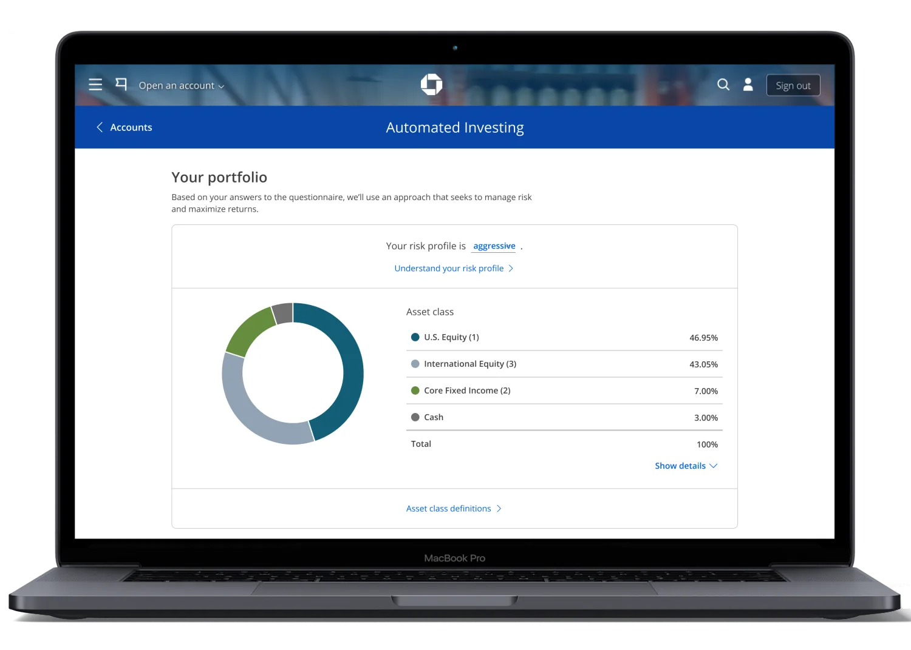
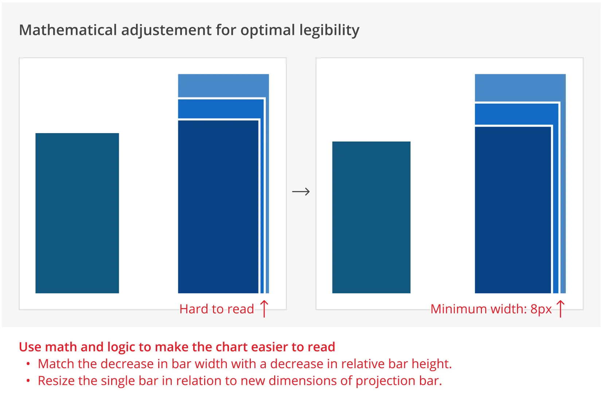
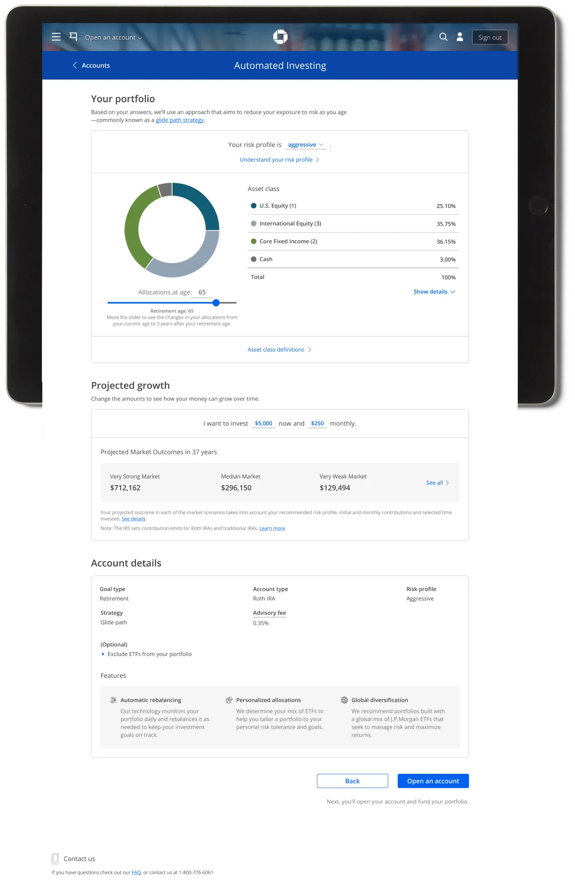

J.P. Morgan Automated Investing is a robo-advisor available on Chase.com and the Chase mobile app, giving millions of new and existing customers access to portfolios designed and managed by J.P. Morgan. Users answer a few questions about their risk profile and goals, get matched to a portfolio, and let the platform handle rebalancing automatically.
Team: 1 designer (me), 2 product managers, 1 tech team, portfolio management team, marketing team.
Generated after the redesign, as of January 2021.
After a year and a half in the market, we redesigned the platform to improve overall satisfaction ratings. The redesign also addressed the most important insights from user research, fixed usability issues and ADA violations, resolved slow load times, and reduced drop-off from the marketing page through account opening.
We identified a pattern that caused confusion: the chart that projects the growth of your money over time. This chart was critical — it needed to show the exponential effects of compounding interest when contributing monthly.
The same chart was failing two different audiences simultaneously:
We redesigned the chart to be easier to parse and moved it to the product landing page to eliminate a step of friction and reduce drop-off. The business was sold on the new chart design despite it not existing in our design system — so I designed, specced, and built it with an engineering team, then contributed it to the design system.
Some edge cases made the chart hard to read, and there was pressure to artificially distort it. I pushed back using Edward Tufte's Principles of Graphical Integrity: in this chart, the amount of money is equal to the area of each bar, not its height. Increasing only the width to accommodate edge cases would misrepresent the data.

Before the redesign, the page showed two charts simultaneously — a donut chart of portfolio asset allocation in the main content area and a projection chart in the sticky right rail. In user testing, people tried to devise a relationship between the two charts that didn't exist.

"No, I don't take asset classes."
— Melissa, 32, usability study participant
In a user research session, when a participant reached the final screen of the flow, the moderator asked about the asset classes in her portfolio. She calmly replied that she didn't take asset classes. It was hilarious — and eye-opening. How can we expect users to open accounts and add money if they don't understand what they're signing up for? This moment reinforced our decision to simplify the language throughout the experience.